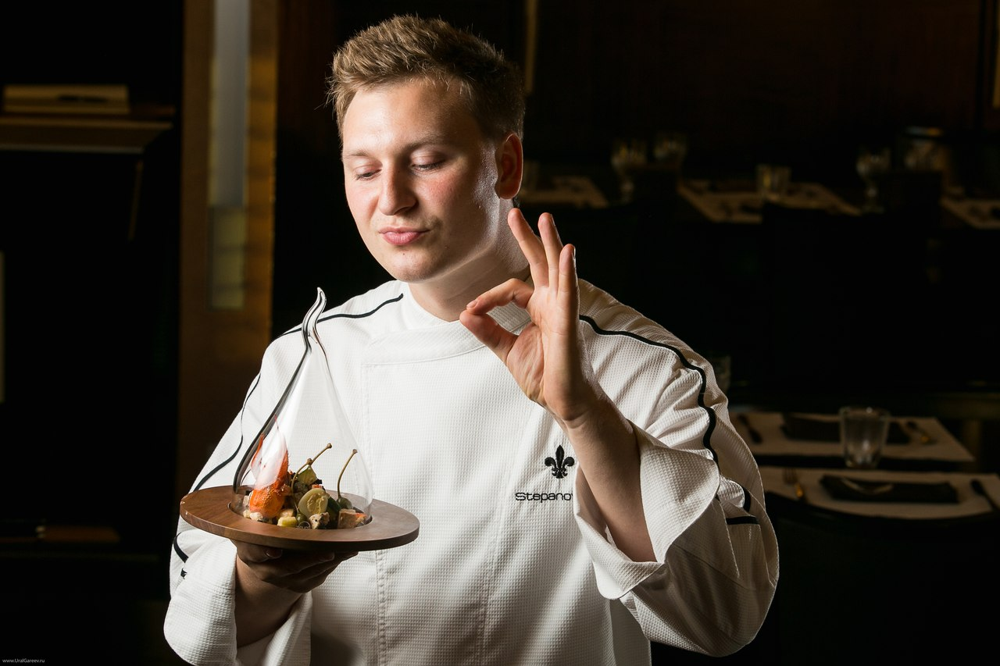

Горячие блюда
Холодные блюда
Напитки
Десерты
|
СОВЕТЫ ОТ ШЕФ-ПОВАРА

На кухне хочется чувствовать себя мастером!
Но некоторые блюда не всегда получается приготовить идеально — только зная тонкости, можно творить кулинарные шедевры.
Предлагаем прочесть ценные советы, о которых точно знает шеф-повар любого приличного ресторана.
Не обязательно быть главным поваром для того, чтобы вкладывать душу в еду.
Готовить вкусно и красиво еду может кто угодно, главное — желание!
Виды блюд:
|
Блюда
|
|
Холодные блюда и закуски
|
Горячие блюда
|
| бутерброды |
салаты |
из мяса |
из рыбы |
| Открытые, Закрытые |
Овощные, фруктовые |
Жареные |
Тушеные |
Советы от Ивана:
- Чтобы придать легкий чесночный аромат всему блюду,
натри зубчиком чеснока тарелку.
- Соли печень только в конце приготовления, иначе она станет твердой.
- Белоснежным получится рис, если при варке добавить в него немного уксуса.
- Добавляйте в блюда ананас, если вам необходимо избавиться от излишней жирности.
- Баклажаны надо готовить на пару всего несколько минут.
- При приготовлении рыбы не надо смазывать сковороду маслом, надо натирать саму рыбу.
- Чтобы при жарке лука избежать неприятного запаха
- добавьте соль
-
жарьте на медленном огне
- Вермут придаст рису для ризотто необычный вкус.
- Цедра расщепит молоко и соус получится как бы творожным.
|